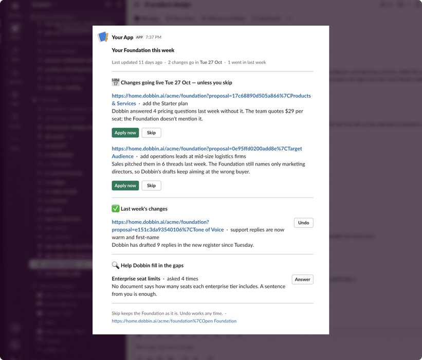
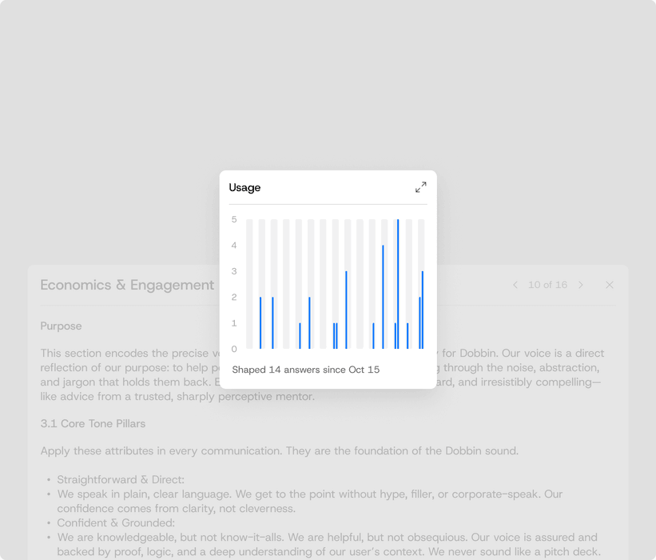

Dobbin is an AI thinking partner, purpose-built for your business.
Adding design.md to your knowledge base
Big Picture
Dobbin is built to see the world through the lens of your brand, market and operating context. It lives in Slack, is available to your whole team and runs on a secure knowledge system.
Role
As Founding Designer I worked 0→1 across brand, strategy and product design. Working closely with the two founders and marketing team, I delivered Dobbin’s evolving brand and designed and helped ship Dobbin’s design system using Claude, Cursor and Figma.
Learnings
Dobbin’s value comes through in the quality, tone and speed of its responses. It’s most successful when customers have a clear need or goal in mind. When Dobbin has a healthy knowledge base or connected integrations, it’s able to help customers effectively.
It was key to show that transparency. Slack blocks and loading messages reference the documents and knowledge Dobbin uses, and if Dobbin doesn’t have sufficient knowledge, it asks for it rather than guessing. That builds trust.
Outcome
An iterative design process to find product-market fit.
● Steady customer growth, low churn rate (8 of our first 10 customers remain with us).
● Clients such as Area 17, Mark Seliger Studio and Evite.
● Delivered brand, marketing website and Dobbin HQ product.
Credit
Hi Shine (Explainer animation)





Team usage
13%
24,987 total interactions
Last 30 days


Building
Dobbin Studio is our internal marketing tool that lets anyone in our team create and test social media posts. The default layouts are based on our top-performing posts, and that performance data feeds back into the tool to keep it up to date.
Dobbin is also connected to the build, so you can check copy against your company’s brand foundation for what to say and what not to say.
Design assets live in Figma, and the Figma MCP connection to Claude makes it super simple to add new templates or create new designs. That means designers keep control of the overall look and feel, while the constraints built into Studio provide the guardrails.